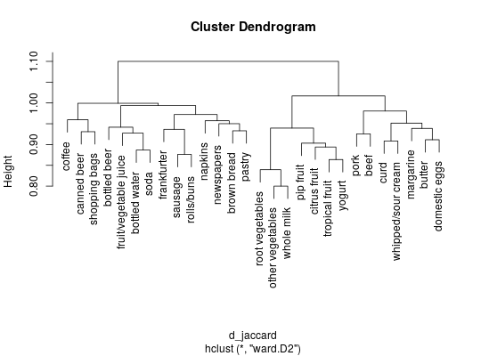
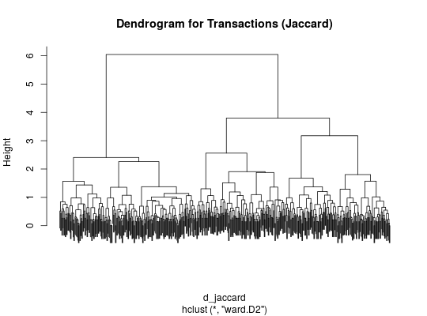
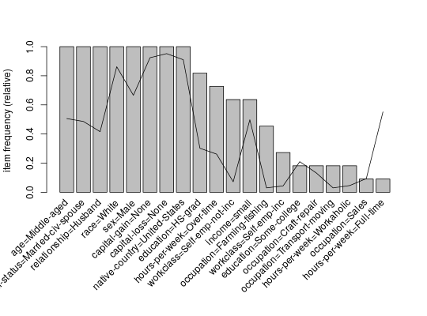
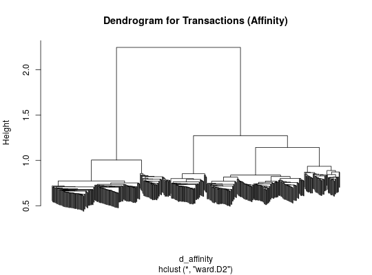
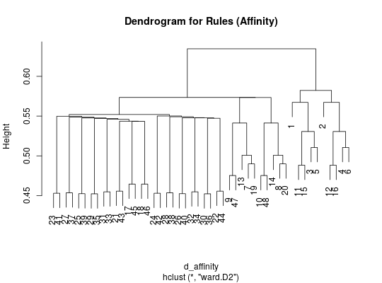

Provides the generic function dissimilarity and the S4 methods to
compute and returns distances for binary data in a matrix,
transactions or associations which
can be used for grouping and clustering. See Hahsler (2016)
for an introduction to distance-based
clustering of association rules.
dissimilarity(x, y = NULL, method = NULL, args = NULL, …) # S4 method for itemMatrix dissimilarity(x, y = NULL, method = NULL, args = NULL, which = "transactions") # S4 method for associations dissimilarity(x, y = NULL, method = NULL, args = NULL, which = "associations") # S4 method for matrix dissimilarity(x, y = NULL, method = NULL, args = NULL)
matrix, itemMatrix, transactions,
itemsets, rules). NULL or a second set to calculate cross dissimilarities. "jaccard"):
"affinity":affinity,
a similarity measure between items. It is defined as the
average affinity between the items in two transactions
(see Aggarwal et al. (2002)). If x is not the
full transaction set args needs to contain
either precalculated affinities as element "affinities" or
the transaction set as "transactions"."cosine":"dice":"euclidean":"jaccard":"matching":"pearson":"phi":"toivonen":args as element "transactions"."gupta":args as element "transactions"."items"). returns an object of class dist.
affinity,
dist-class,
itemMatrix-class,
associations-class.
Aggarwal, C.C., Cecilia Procopiuc, and Philip S. Yu. (2002) Finding localized associations in market basket data. IEEE Trans. on Knowledge and Data Engineering 14(1):51--62.
Dice, L. R. (1945) Measures of the amount of ecologic association between species. Ecology 26, pages 297--302.
Gupta, G., Strehl, A., and Ghosh, J. (1999) Distance based clustering of association rules. In Intelligent Engineering Systems Through Artificial Neural Networks (Proceedings of ANNIE 1999), pages 759-764. ASME Press.
Hahsler, M. (2016) Grouping association rules using lift. In C. Iyigun, R. Moghaddess, and A. Oztekin, editors, 11th INFORMS Workshop on Data Mining and Decision Analytics (DM-DA 2016).
Sneath, P. H. A. (1957) Some thoughts on bacterial classification. Journal of General Microbiology 17, pages 184--200.
Sokal, R. R. and Michener, C. D. (1958) A statistical method for evaluating systematic relationships. University of Kansas Science Bulletin 38, pages 1409--1438.
Toivonen, H., Klemettinen, M., Ronkainen, P., Hatonen, K. and Mannila H. (1995) Pruning and grouping discovered association rules. In Proceedings of KDD'95.
## cluster items in Groceries with support > 5% data("Groceries") s <- Groceries[,itemFrequency(Groceries)>0.05] d_jaccard <- dissimilarity(s, which = "items") plot(hclust(d_jaccard, method = "ward.D2"))## cluster transactions for a sample of Adult data("Adult") s <- sample(Adult, 500) ## calculate Jaccard distances and do hclust d_jaccard <- dissimilarity(s) hc <- hclust(d_jaccard, method = "ward.D2") plot(hc, labels = FALSE, main = "Dendrogram for Transactions (Jaccard)")## get 20 clusters and look at the difference of the item frequencies (bars) ## for the top 20 items) in cluster 1 compared to the data (line) assign <- cutree(hc, 20) itemFrequencyPlot(s[assign==1], population=s, topN=20)## calculate affinity-based distances between transactions and do hclust d_affinity <- dissimilarity(s, method = "affinity") hc <- hclust(d_affinity, method = "ward.D2") plot(hc, labels = FALSE, main = "Dendrogram for Transactions (Affinity)")#> Apriori #> #> Parameter specification: #> confidence minval smax arem aval originalSupport maxtime support minlen #> 0.8 0.1 1 none FALSE TRUE 5 0.3 1 #> maxlen target ext #> 10 rules FALSE #> #> Algorithmic control: #> filter tree heap memopt load sort verbose #> 0.1 TRUE TRUE FALSE TRUE 2 TRUE #> #> Absolute minimum support count: 14652 #> #> set item appearances ...[0 item(s)] done [0.00s]. #> set transactions ...[115 item(s), 48842 transaction(s)] done [0.03s]. #> sorting and recoding items ... [14 item(s)] done [0.01s]. #> creating transaction tree ... done [0.03s]. #> checking subsets of size 1 2 3 4 5 6 done [0.03s]. #> writing ... [508 rule(s)] done [0.00s]. #> creating S4 object ... done [0.01s].rules <- subset(rules, subset = lift > 2) ## use affinity to cluster rules ## Note: we need to supply the transactions (or affinities) from the ## dataset (sample). d_affinity <- dissimilarity(rules, method = "affinity", args = list(transactions = s)) hc <- hclust(d_affinity, method = "ward.D2") plot(hc, main = "Dendrogram for Rules (Affinity)")